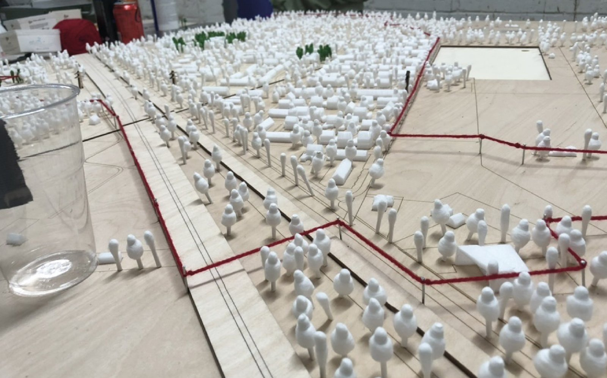
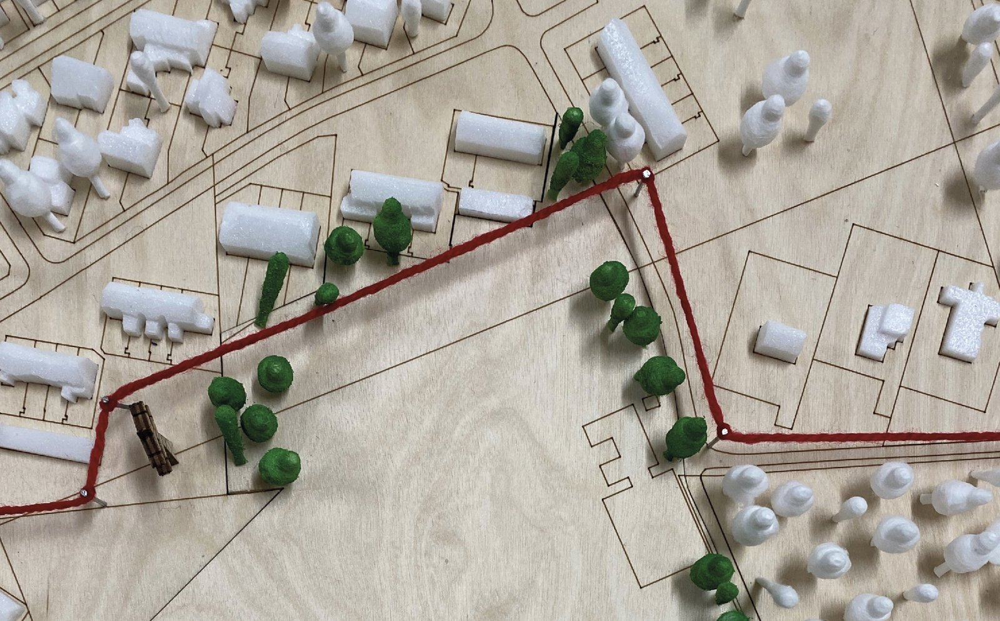
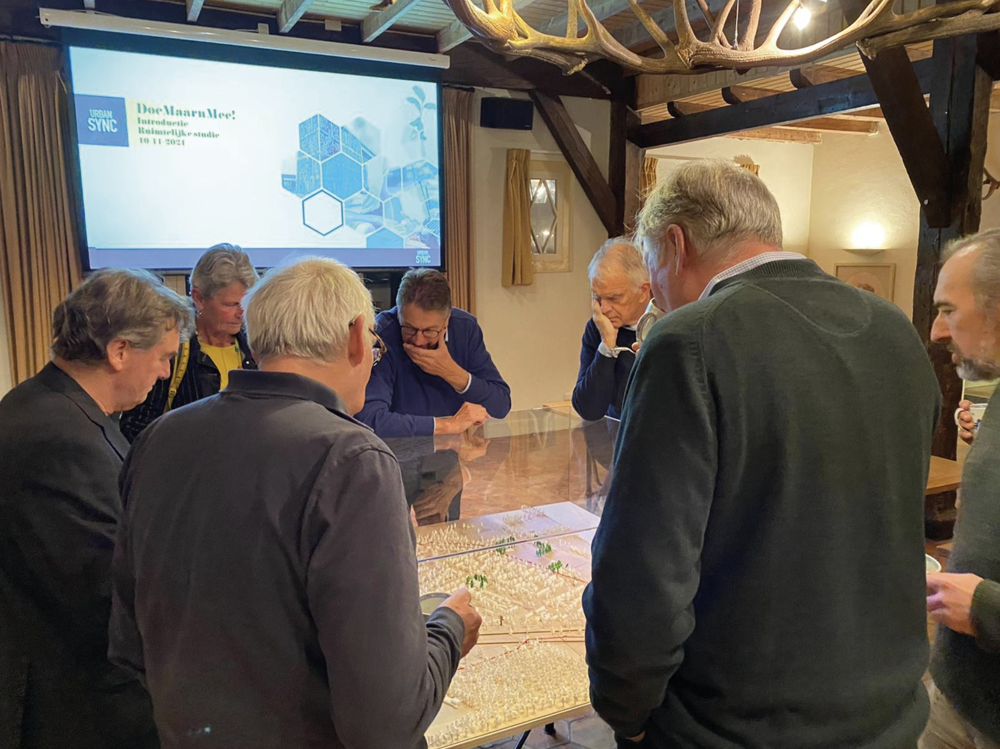
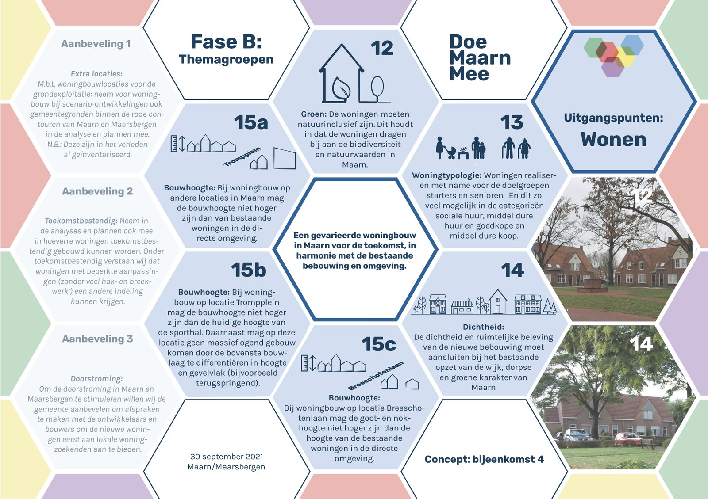

← Back to all projects

DoeMaarnMee
Facilitating co-creation with two villages to shape their own future facilities.
Facilitating co-creation with two villages to shape their own future facilities.
Maarn and Maarsbergen are close-knit villages that want to stay that way. To keep up with the future, the two communities need better facilities: schools, childcare, a library, sports fields and a place to meet. Rather than have the municipality design this top-down, DoeMaarnMee sets the process up as a genuine co-creation between the municipality of Utrechtse Heuvelrug, residents and local organisations, with Urban Sync asked to design and steer it.
The process runs in three phases that funnel into each other: Phase A gathers opinions, ideas and dreams from as many residents as possible; Phase B turns the resulting themes into shared principles through theme groups; Phase C, the "drawing and calculation office", works those principles into concrete scenarios and one master plan for where schools, housing, the village hall and sports facilities should land.
As project assistant, I helped design the co-creation process itself and became a familiar point of contact for everyone involved: handling incoming requests, the project website and updates, and co-organising events. To help residents engage directly with the four designated development areas, I built a physical model of Maarn with a colleague, so residents could design their own living environments instead of having architects design them for them.



